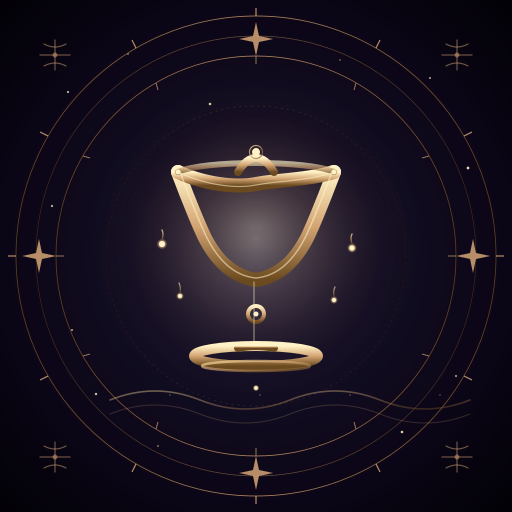
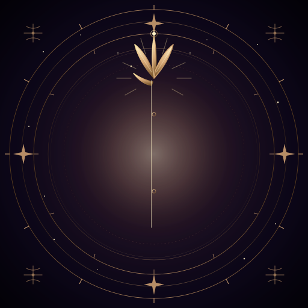
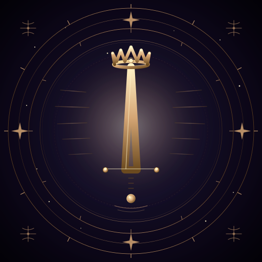

♈ Aries





Per-sign astrology section icons, horoscope cards, footer zodiac wheel, interactive sign picker. Infinite scale, native to CSS hover/focus animation.
Daily zodiac post header, story stickers, reel transitions. Swap to any palette at runtime via CSS var. Composes with SMIL animation for kinetic variants.
Per-sign command avatars, subscription pack icons, reading-completion badges. All under 15 KB → instant load on mobile.
Personalized sign-of-month header, subscription-tier badge, reading-available notification. Inline SVG renders in most modern mail clients.
Zodiac-sign necklace / pin designs, greeting card backs, journal covers. Vector → infinite print DPI. Suit icons for premium deck box.
Apply SMIL overlay per brain/SVG Protocol.md (Taurus animated v1 proved the pattern — star twinkle, ring rotation, aura breathing). ~$0 extra to animate.